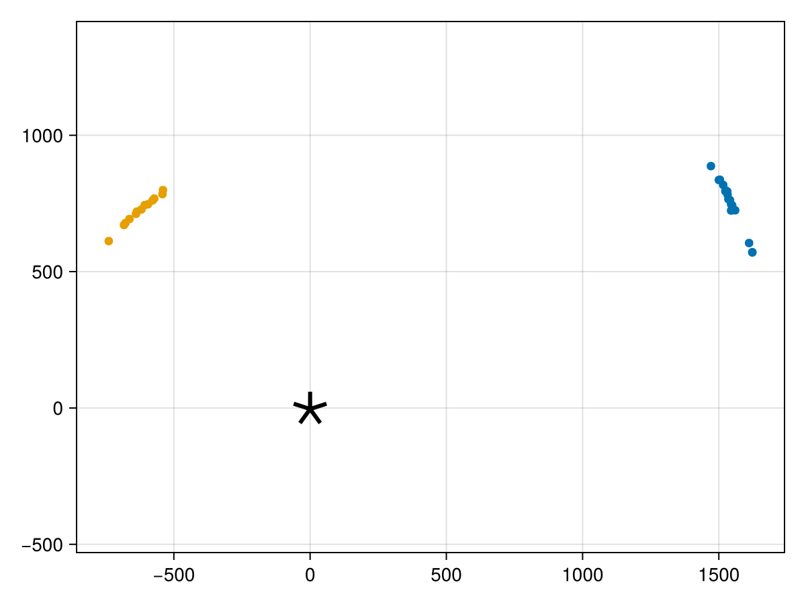
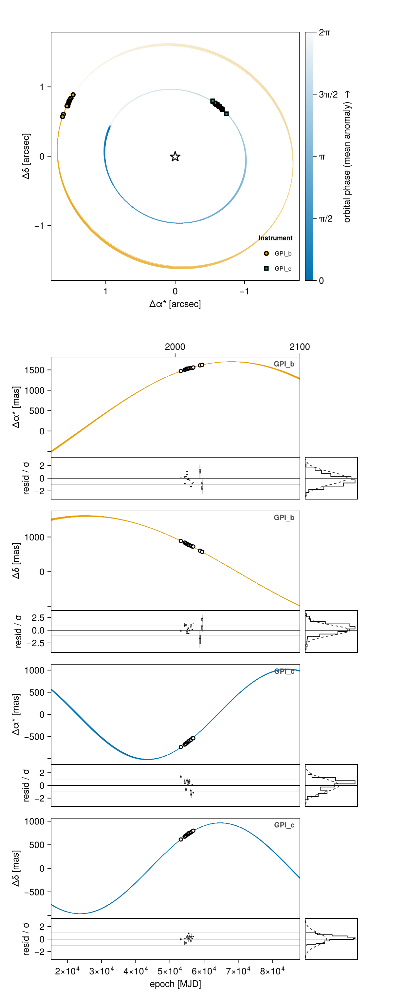
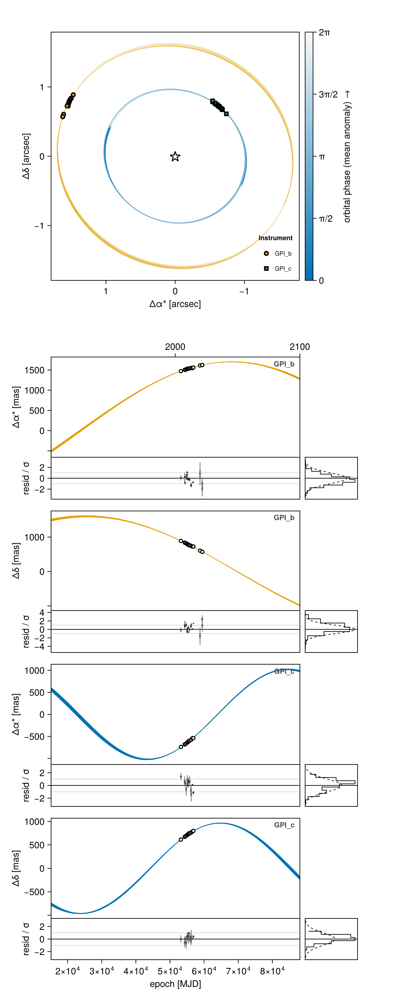
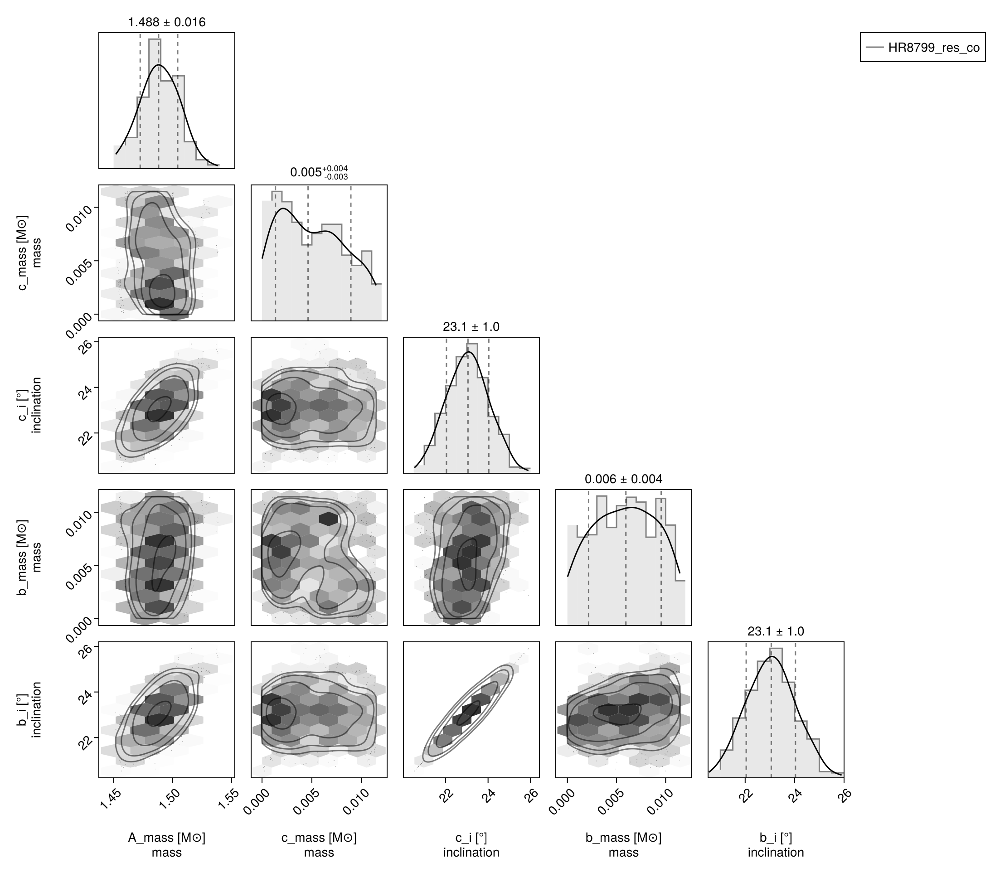
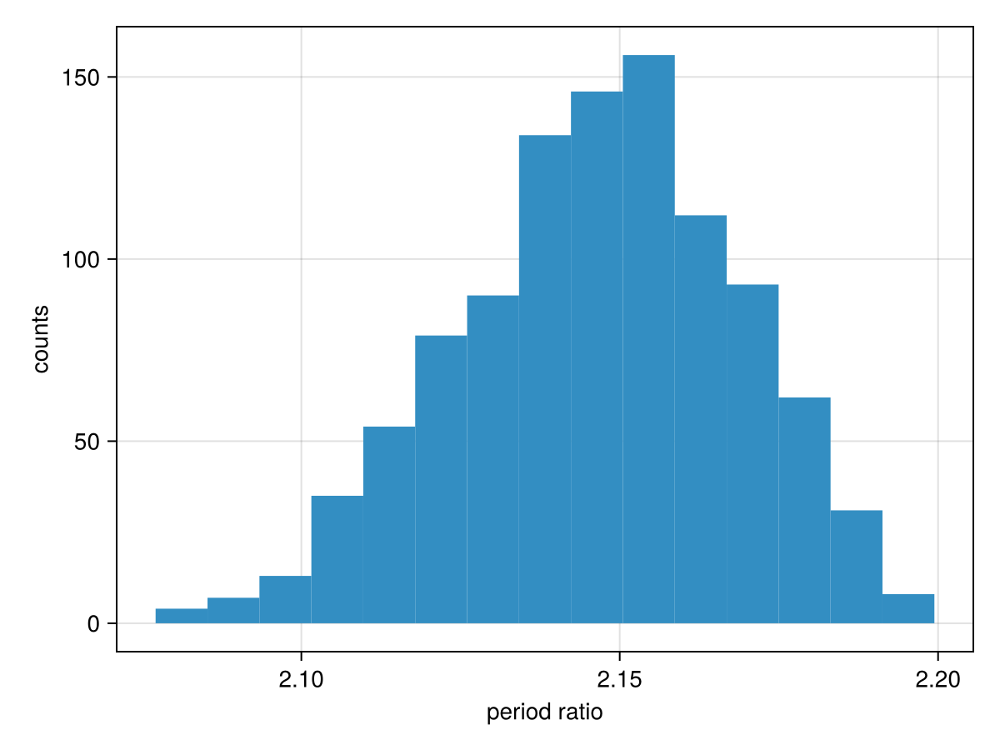
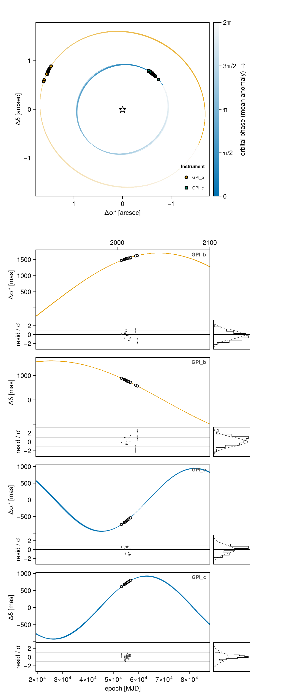
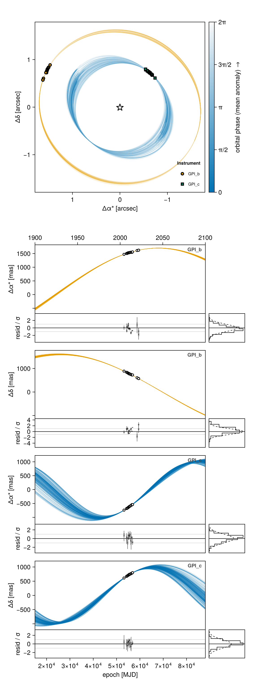
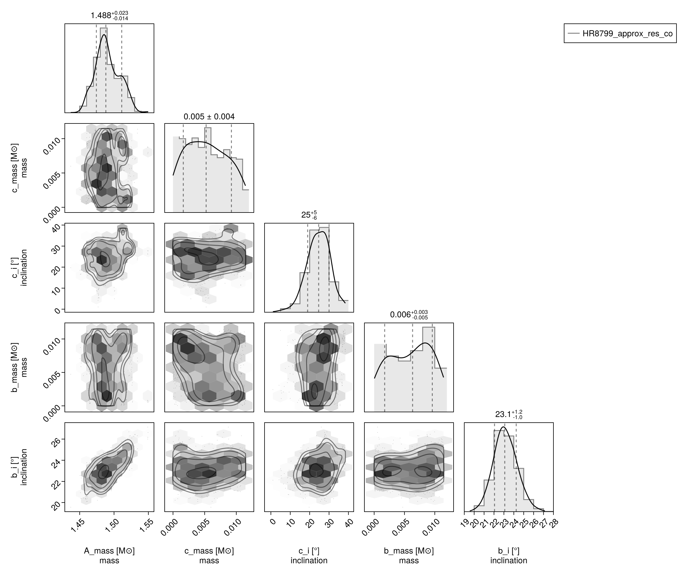
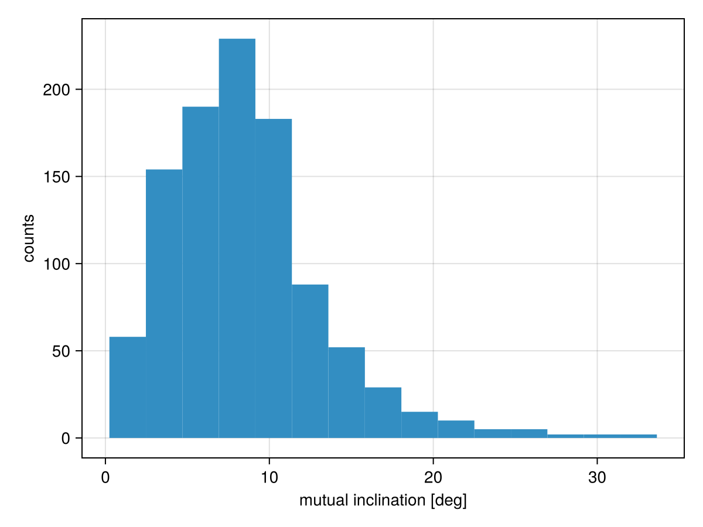

Hierarchical Co-Planar, Near-Resonant Model
This example shows how you can fit a two planet model to relative astrometry data. This functionality would work equally well with RV, images, etc.
We will demonstrate two models: the first, where the planets are exactly co-planar (using a single set of variables for the inlination and position angle of ascending node for both planets), and a second, where the planets are approximately co-planar according to a custom prior.
For this example, we will use astrometry from the HR8799 system collated by Jason Wang and retrieved from the website Whereistheplanet.com.
Data
using Octofitter
using CairoMakie
using PairPlots
using Distributions
using PlanetOrbits
using Pigeonsastrom_dat_b = Table(;
epoch = [53200.0, 54314.0, 54398.0, 54727.0, 55042.0, 55044.0, 55136.0, 55390.0, 55499.0, 55763.0, 56130.0, 56226.0, 56581.0, 56855.0, 58798.03906, 59453.245, 59454.231],
ra = [1471.0, 1504.0, 1500.0, 1516.0, 1526.0, 1531.0, 1524.0, 1532.0, 1535.0, 1541.0, 1545.0, 1549.0, 1545.0, 1560.0, 1611.002, 1622.924, 1622.872],
dec = [887.0, 837.0, 836.0, 818.0, 797.0, 794.0, 795.0, 783.0, 766.0, 762.0, 747.0, 743.0, 724.0, 725.0, 604.893, 570.534, 571.296],
σ_ra = [6.0, 3.0, 7.0, 4.0, 4.0, 7.0, 10.0, 5.0, 15.0, 5.0, 5.0, 4.0, 22.0, 13.0, 0.133, 0.32, 0.204],
σ_dec = [6.0, 3.0, 7.0, 4.0, 4.0, 7.0, 10.0, 5.0, 15.0, 5.0, 5.0, 4.0, 22.0, 13.0, 0.199, 0.296, 0.446],
cor = [0.0, 0.0, 0.0, 0.0, 0.0, 0.0, 0.0, 0.0, 0.0, 0.0, 0.0, 0.0, 0.0, 0.0, -0.406, -0.905, -0.79]
)
astrom_dat_c = Table(;
epoch = [53200.0, 54314.0, 54398.0, 54727.0, 55042.0, 55136.0, 55390.0, 55499.0, 55763.0, 56130.0, 56226.0, 56581.0, 56855.0],
ra = [-739.0, -683.0, -678.0, -663.0, -639.0, -636.0, -619.0, -607.0, -595.0, -578.0, -572.0, -542.0, -540.0],
dec = [612.0, 671.0, 678.0, 693.0, 712.0, 720.0, 728.0, 744.0, 747.0, 761.0, 768.0, 784.0, 799.0],
σ_ra = [6.0, 4.0, 7.0, 3.0, 4.0, 9.0, 4.0, 12.0, 4.0, 5.0, 3.0, 22.0, 12.0],
σ_dec = [6.0, 4.0, 7.0, 3.0, 4.0, 9.0, 4.0, 12.0, 4.0, 5.0, 3.0, 22.0, 12.0],
cor = [0.0, 0.0, 0.0, 0.0, 0.0, 0.0, 0.0, 0.0, 0.0, 0.0, 0.0, 0.0, 0.0]
)The bodies
HR 8799 b is the outer of the two planets and c the inner one, so we write the hierarchy as a Jacobi chain: c orbits the star, and b orbits the barycentre of the star and c (about=(A, c)). The convention is stated in the model, never inferred; see Jacobi vs. astrocentric for what the choice means physically.
Because the mass of every orbit is computed from the bodies it binds, there is no M variable to get wrong: the c row's mass is A.mass + c.mass and the b row's is A.mass + c.mass + b.mass, automatically.
A = Body(
name="A",
variables=@variables begin
mass ~ truncated(Normal(1.5, 0.02), lower=0.1) # [M⊙]
end
)Exact Co-Planar Model
This model will use a single pair of i and Ω variables for both planets to enforce exact co-planarity. Sharing a parameter between two bodies is done by hoisting it to the system block; a body block cannot see its siblings.
Note that we do not need to convert period to semi-major axis by hand any more: P is an orbital element in its own right (in days), and PlanetOrbits derives a from it using the row's own gravitating mass.
planet_c = Body(
name="c",
about=A,
variables=@variables begin
mass ~ Uniform(0, 12mjup) # [M⊙]
e = 0.0
ω = 0.0
# Use the system inclination and longitude of ascending node variables
i = system.i
Ω = system.Ω
# Specify the period as ~ 10% around the P_nominal variable
P_mul ~ truncated(Normal(1, 0.1), lower=0.1)
P = system.P_nominal * P_mul * year2day_julian # [days]
θ ~ UniformCircular()
epoch = 59454.231 # reference epoch for θ. Choose an MJD date near your data.
end
)
planet_b = Body(
name="b",
about=(A, planet_c), # Jacobi: b orbits the A+c barycentre
variables=@variables begin
mass ~ Uniform(0, 12mjup) # [M⊙]
e = 0.0
ω = 0.0
i = system.i
Ω = system.Ω
# Specify the period as ~ 10% around 2X the P_nominal variable
P_mul ~ Normal(1, 0.1)
P = 2 * system.P_nominal * P_mul * year2day_julian # [days]
θ ~ UniformCircular()
epoch = 59454.231
end
)
astrom_b = RelAstromObs(
astrom_dat_b;
target = planet_b,
ref = A,
name = "GPI_b",
variables = @variables begin
# Fixed values for this example - could be free variables:
jitter = 0 # mas [could use: jitter ~ Uniform(0, 10)]
northangle = 0 # radians [could use: northangle ~ Normal(0, deg2rad(1))]
platescale = 1 # relative [could use: platescale ~ truncated(Normal(1, 0.01), lower=0)]
end
)
astrom_c = RelAstromObs(
astrom_dat_c;
target = planet_c,
ref = A,
name = "GPI_c",
variables = @variables begin
jitter = 0 # mas
northangle = 0 # radians
platescale = 1 # relative
end
)
sys = System(
name="HR8799_res_co",
bodies=[A, planet_c, planet_b],
observations=[astrom_b, astrom_c],
variables=@variables begin
plx ~ gaia_plx(;gaia_id=2832463659640297472)
# We create inclination and longitude of ascending node variables at the
# system level.
i ~ Sine()
Ω ~ UniformCircular()
# We create a nominal period of planet c variable.
P_nominal ~ Uniform(50, 300) # Julian years
end
)
model = Octofitter.LogDensityModel(sys)LogDensityModel for System HR8799_res_co of dimension 14 and 30 epochs with fields .ℓπcallback and .∇ℓπcallback
Let's plot our data before we start:
fig = scatter(astrom_b.table.ra, astrom_b.table.dec, axis=(;autolimitaspect=1))
scatter!(astrom_c.table.ra, astrom_c.table.dec)
scatter!([0], [0], marker='⋆', markersize=50, color=:black)
fig
Initialize the starting points, and confirm the data are entered correcly:
init_chain = initialize!(model, (;
plx = 24.4549,
P_nominal = 230,
bodies = (;
A = (; mass = 1.48),
b = (; mass = 5.73mjup),
c = (; mass = 5.14mjup),
)
))
octoplot(model, init_chain)
Now sample from the model using Pigeons parallel tempering:
results, pt = octofit_pigeons(model, n_rounds=10);┌ Warning: This model has priors that cannot be sampled IID.
└ @ OctofitterPigeonsExt ~/octo-maintenance/runner/actions-runner/_work/Octofitter.jl/Octofitter.jl/ext/OctofitterPigeonsExt.jl:192
[ Info: Sampler running with multiple threads : true
[ Info: Likelihood evaluated with multiple threads: false
[ Info: [HR8799_res_co] observing_geometry = true (user)
[ Info: [HR8799_res_co] barycentric_lighttime = false (user)
[ Info: [HR8799_res_co] observing_geometry = true (user)
[ Info: [HR8799_res_co] barycentric_lighttime = false (user)
────────────────────────────────────────────────────────────────────────────────────────────────────────────────────────
scans restarts Λ Λ_var time(s) allc(B) log(Z₁/Z₀) min(α) mean(α) min(αₑ) mean(αₑ)
────────── ────────── ────────── ────────── ────────── ────────── ────────── ────────── ────────── ────────── ──────────
2 0 3.44 2.8 1.57 9.66e+06 -1.53e+07 0 0.799 1 1
4 0 3.95 5.13 0.241 1.94e+05 -1.51e+06 0 0.707 1 1
8 0 5.5 4.79 0.474 3.72e+05 -1.84e+05 0 0.668 1 1
16 0 6.47 7.51 0.953 5.97e+05 -4.07e+03 0 0.549 1 1
32 0 7.47 8.16 1.89 1.02e+06 -225 0 0.496 1 1
64 0 7.77 6.15 4.49 7.48e+07 -208 7.12e-117 0.551 1 1
128 0 8.47 7.15 7.38 1.34e+08 -208 7.58e-112 0.496 1 1
256 1 8.68 7.85 15.2 2.65e+08 -206 1.49e-07 0.467 1 1
512 7 9.45 8.29 30.2 5.28e+08 -204 9.93e-07 0.428 1 1
┌ Warning: Failed to construct the orbital system from these parameters
│ exception =
│ these orbits do not independently determine every body's position — the hierarchy is circular or redundant. Rows, as (exterior about interior):
│ 1: (:c,) about (:A,)
│ 2: (:b,) about (:A, :c)
│ Stacktrace:
│ [1] error(s::String)
│ @ Base ./error.jl:44
│ [2] _err_singular(names::Tuple{Symbol, Symbol, Symbol}, specs::Tuple{PlanetOrbits.RowSpec{3}, PlanetOrbits.RowSpec{3}})
│ @ PlanetOrbits ~/octo-maintenance/runner/actions-runner/_work/Octofitter.jl/Octofitter.jl/.planetorbits-v2/src/system.jl:287
│ [3] PlanetOrbits.System(bodyspec::Tuple{PlanetOrbits.Body{Float64, @NamedTuple{}, :A}, PlanetOrbits.Body{Float64, @NamedTuple{}, :c}, PlanetOrbits.Body{Float64, @NamedTuple{}, :b}}, orbits::Tuple{PlanetOrbits.Orbit{PlanetOrbits.Body{Float64, @NamedTuple{}, :c}, PlanetOrbits.Body{Float64, @NamedTuple{}, :A}, Float64}, PlanetOrbits.Orbit{PlanetOrbits.Body{Float64, @NamedTuple{}, :b}, Tuple{PlanetOrbits.Body{Float64, @NamedTuple{}, :A}, PlanetOrbits.Body{Float64, @NamedTuple{}, :c}}, Float64}}; kwargs::@Kwargs{plx::Float64})
│ @ PlanetOrbits ~/octo-maintenance/runner/actions-runner/_work/Octofitter.jl/Octofitter.jl/.planetorbits-v2/src/system.jl:141
│ [4] System
│ @ ~/octo-maintenance/runner/actions-runner/_work/Octofitter.jl/Octofitter.jl/.planetorbits-v2/src/system.jl:104 [inlined]
│ [5] macro expansion
│ @ ~/octo-maintenance/runner/actions-runner/_work/Octofitter.jl/Octofitter.jl/src/model/corrections.jl:314 [inlined]
│ [6] macro expansion
│ @ ~/.julia/packages/RuntimeGeneratedFunctions/odmYb/src/RuntimeGeneratedFunctions.jl:247 [inlined]
│ [7] macro expansion
│ @ ./none:0 [inlined]
│ [8] generated_callfunc(f::RuntimeGeneratedFunctions.RuntimeGeneratedFunction{(:θ,), Octofitter.var"#_RGF_ModTag", Octofitter.var"#_RGF_ModTag", (0xf384412b, 0x48c90a49, 0xee9ab48b, 0xb68be70d, 0xdcadaea3), Expr}, __args::@NamedTuple{plx::Float64, i::Float64, Ωx::Float64, Ωy::Float64, P_nominal::Float64, Ω::Float64, bodies::@NamedTuple{A::@NamedTuple{mass::Float64}, c::@NamedTuple{mass::Float64, P_mul::Float64, θx::Float64, θy::Float64, θ::Float64, e::Float64, ω::Float64, i::Float64, Ω::Float64, P::Float64, epoch::Float64}, b::@NamedTuple{mass::Float64, P_mul::Float64, θx::Float64, θy::Float64, θ::Float64, e::Float64, ω::Float64, i::Float64, Ω::Float64, P::Float64, epoch::Float64}}, observations::@NamedTuple{GPI_b::@NamedTuple{jitter::Int64, northangle::Int64, platescale::Int64}, GPI_c::@NamedTuple{jitter::Int64, northangle::Int64, platescale::Int64}}})
│ @ Octofitter ./none:0
│ [9] RuntimeGeneratedFunction
│ @ ~/.julia/packages/RuntimeGeneratedFunctions/odmYb/src/RuntimeGeneratedFunctions.jl:234 [inlined]
│ [10] GeneratedLnLike
│ @ ~/octo-maintenance/runner/actions-runner/_work/Octofitter.jl/Octofitter.jl/src/model/codegen.jl:684 [inlined]
│ [11] (::Octofitter.var"#ℓπcallback#272"{System{Tuple{Body{Octofitter.Priors, Octofitter.Derived, Tuple{}}, Body{Octofitter.Priors, Octofitter.Derived, Tuple{Octofitter.UnitLengthPrior{:θx, :θy}}}, Body{Octofitter.Priors, Octofitter.Derived, Tuple{Octofitter.UnitLengthPrior{:θx, :θy}}}}, Tuple{Octofitter.BlankLikelihood, Octofitter.BlankLikelihood}, Tuple{Pair{Symbol, Octofitter.UnitLengthPrior{:Ωx, :Ωy}}, Pair{Symbol, Octofitter.UnitLengthPrior{:θx, :θy}}, Pair{Symbol, Octofitter.UnitLengthPrior{:θx, :θy}}}, Octofitter.Priors, Octofitter.Derived, KeplerianApprox{PlanetOrbits.Auto}}, RuntimeGeneratedFunctions.RuntimeGeneratedFunction{(:arr,), Octofitter.var"#_RGF_ModTag", Octofitter.var"#_RGF_ModTag", (0xa80b7843, 0xc33efcd7, 0xaa15cc96, 0x9a8085bf, 0xc58dcc9f), Expr}, RuntimeGeneratedFunctions.RuntimeGeneratedFunction{(:arr,), Octofitter.var"#_RGF_ModTag", Octofitter.var"#_RGF_ModTag", (0x53f1e7f0, 0x5946439e, 0x81b19329, 0xfa91cfe4, 0xb488d9ff), Expr}, RuntimeGeneratedFunctions.RuntimeGeneratedFunction{(:arr, :sampled), Octofitter.var"#_RGF_ModTag", Octofitter.var"#_RGF_ModTag", (0xaca02c34, 0x9f8ac540, 0x85a4e074, 0xfd7df62a, 0xc87f6d30), Expr}, Octofitter.GeneratedLnLike{RuntimeGeneratedFunctions.RuntimeGeneratedFunction{(:θ,), Octofitter.var"#_RGF_ModTag", Octofitter.var"#_RGF_ModTag", (0xf384412b, 0x48c90a49, 0xee9ab48b, 0xb68be70d, 0xdcadaea3), Expr}, RuntimeGeneratedFunctions.RuntimeGeneratedFunction{(:system, :θ, :posys), Octofitter.var"#_RGF_ModTag", Octofitter.var"#_RGF_ModTag", (0xb04a0c31, 0x281b0875, 0xeb2db20a, 0x5a903643, 0xfb8c8d18), Expr}}, Octofitter.var"#ℓπcallback#263#273"})(θ_transformed::Vector{Float64}, system::System{Tuple{Body{Octofitter.Priors, Octofitter.Derived, Tuple{}}, Body{Octofitter.Priors, Octofitter.Derived, Tuple{Octofitter.UnitLengthPrior{:θx, :θy}}}, Body{Octofitter.Priors, Octofitter.Derived, Tuple{Octofitter.UnitLengthPrior{:θx, :θy}}}}, Tuple{Octofitter.BlankLikelihood, Octofitter.BlankLikelihood}, Tuple{Pair{Symbol, Octofitter.UnitLengthPrior{:Ωx, :Ωy}}, Pair{Symbol, Octofitter.UnitLengthPrior{:θx, :θy}}, Pair{Symbol, Octofitter.UnitLengthPrior{:θx, :θy}}}, Octofitter.Priors, Octofitter.Derived, KeplerianApprox{PlanetOrbits.Auto}}, arr2nt::RuntimeGeneratedFunctions.RuntimeGeneratedFunction{(:arr,), Octofitter.var"#_RGF_ModTag", Octofitter.var"#_RGF_ModTag", (0xa80b7843, 0xc33efcd7, 0xaa15cc96, 0x9a8085bf, 0xc58dcc9f), Expr}, Bijector_invlinkvec::RuntimeGeneratedFunctions.RuntimeGeneratedFunction{(:arr,), Octofitter.var"#_RGF_ModTag", Octofitter.var"#_RGF_ModTag", (0x53f1e7f0, 0x5946439e, 0x81b19329, 0xfa91cfe4, 0xb488d9ff), Expr}, ln_prior_transformed::RuntimeGeneratedFunctions.RuntimeGeneratedFunction{(:arr, :sampled), Octofitter.var"#_RGF_ModTag", Octofitter.var"#_RGF_ModTag", (0xaca02c34, 0x9f8ac540, 0x85a4e074, 0xfd7df62a, 0xc87f6d30), Expr}, ln_like_generated::Octofitter.GeneratedLnLike{RuntimeGeneratedFunctions.RuntimeGeneratedFunction{(:θ,), Octofitter.var"#_RGF_ModTag", Octofitter.var"#_RGF_ModTag", (0xf384412b, 0x48c90a49, 0xee9ab48b, 0xb68be70d, 0xdcadaea3), Expr}, RuntimeGeneratedFunctions.RuntimeGeneratedFunction{(:system, :θ, :posys), Octofitter.var"#_RGF_ModTag", Octofitter.var"#_RGF_ModTag", (0xb04a0c31, 0x281b0875, 0xeb2db20a, 0x5a903643, 0xfb8c8d18), Expr}}; sampled::Bool)
│ @ Octofitter ~/octo-maintenance/runner/actions-runner/_work/Octofitter.jl/Octofitter.jl/src/logdensitymodel.jl:312
│ [12] ℓπcallback (repeats 6 times)
│ @ ~/octo-maintenance/runner/actions-runner/_work/Octofitter.jl/Octofitter.jl/src/logdensitymodel.jl:288 [inlined]
│ [13] LogDensityModel
│ @ ~/octo-maintenance/runner/actions-runner/_work/Octofitter.jl/Octofitter.jl/ext/OctofitterPigeonsExt.jl:23 [inlined]
│ [14] InterpolatedLogPotential
│ @ ~/.julia/packages/Pigeons/y3Kae/src/paths/InterpolatedLogPotential.jl:16 [inlined]
│ [15] slice_double(h::Pigeons.SliceSampler, replica::Pigeons.Replica{Vector{Float64}, @NamedTuple{explorer_acceptance_pr::OnlineStatsBase.GroupBy{Int64, Number, OnlineStatsBase.Mean{Float64, OnlineStatsBase.EqualWeight}}, explorer_n_steps::OnlineStatsBase.GroupBy{Int64, Number, OnlineStatsBase.Sum{Float64}}, swap_acceptance_pr::OnlineStatsBase.GroupBy{Tuple{Int64, Int64}, Number, OnlineStatsBase.Mean{Float64, OnlineStatsBase.EqualWeight}}, log_sum_ratio::OnlineStatsBase.GroupBy{Tuple{Int64, Int64}, Number, Pigeons.LogSum{Float64}}, traces::Dict{Pair{Int64, Int64}, Any}, round_trip::Pigeons.RoundTripRecorder, timing_extrema::NonReproducible{...}, allocation_extrema::NonReproducible{...}, index_process::Dict{Int64, Vector{Int64}}, _transformed_online::Pigeons.OnlineStateRecorder}}, z::Float64, pointer::Base.RefArray{Float64, Vector{Float64}, Nothing}, log_potential::InterpolatedLogPotential{...})
│ @ Pigeons ~/.julia/packages/Pigeons/y3Kae/src/explorers/SliceSampler.jl:118
│ [16] slice_sample_coord!
│ @ ~/.julia/packages/Pigeons/y3Kae/src/explorers/SliceSampler.jl:92 [inlined]
│ [17] slice_sample!(h::Pigeons.SliceSampler, state::Vector{Float64}, log_potential::InterpolatedLogPotential{...}, cached_lp::Float64, replica::Pigeons.Replica{Vector{Float64}, @NamedTuple{explorer_acceptance_pr::OnlineStatsBase.GroupBy{Int64, Number, OnlineStatsBase.Mean{Float64, OnlineStatsBase.EqualWeight}}, explorer_n_steps::OnlineStatsBase.GroupBy{Int64, Number, OnlineStatsBase.Sum{Float64}}, swap_acceptance_pr::OnlineStatsBase.GroupBy{Tuple{Int64, Int64}, Number, OnlineStatsBase.Mean{Float64, OnlineStatsBase.EqualWeight}}, log_sum_ratio::OnlineStatsBase.GroupBy{Tuple{Int64, Int64}, Number, Pigeons.LogSum{Float64}}, traces::Dict{Pair{Int64, Int64}, Any}, round_trip::Pigeons.RoundTripRecorder, timing_extrema::NonReproducible{...}, allocation_extrema::NonReproducible{...}, index_process::Dict{Int64, Vector{Int64}}, _transformed_online::Pigeons.OnlineStateRecorder}})
│ @ Pigeons ~/.julia/packages/Pigeons/y3Kae/src/explorers/SliceSampler.jl:49
│ [18] step!(explorer::Pigeons.SliceSampler, replica::Pigeons.Replica{Vector{Float64}, @NamedTuple{explorer_acceptance_pr::OnlineStatsBase.GroupBy{Int64, Number, OnlineStatsBase.Mean{Float64, OnlineStatsBase.EqualWeight}}, explorer_n_steps::OnlineStatsBase.GroupBy{Int64, Number, OnlineStatsBase.Sum{Float64}}, swap_acceptance_pr::OnlineStatsBase.GroupBy{Tuple{Int64, Int64}, Number, OnlineStatsBase.Mean{Float64, OnlineStatsBase.EqualWeight}}, log_sum_ratio::OnlineStatsBase.GroupBy{Tuple{Int64, Int64}, Number, Pigeons.LogSum{Float64}}, traces::Dict{Pair{Int64, Int64}, Any}, round_trip::Pigeons.RoundTripRecorder, timing_extrema::NonReproducible{...}, allocation_extrema::NonReproducible{...}, index_process::Dict{Int64, Vector{Int64}}, _transformed_online::Pigeons.OnlineStateRecorder}}, shared::Shared{...})
│ @ Pigeons ~/.julia/packages/Pigeons/y3Kae/src/explorers/SliceSampler.jl:28
│ [19] explore!(pt::PT{...}, replica::Pigeons.Replica{Vector{Float64}, @NamedTuple{explorer_acceptance_pr::OnlineStatsBase.GroupBy{Int64, Number, OnlineStatsBase.Mean{Float64, OnlineStatsBase.EqualWeight}}, explorer_n_steps::OnlineStatsBase.GroupBy{Int64, Number, OnlineStatsBase.Sum{Float64}}, swap_acceptance_pr::OnlineStatsBase.GroupBy{Tuple{Int64, Int64}, Number, OnlineStatsBase.Mean{Float64, OnlineStatsBase.EqualWeight}}, log_sum_ratio::OnlineStatsBase.GroupBy{Tuple{Int64, Int64}, Number, Pigeons.LogSum{Float64}}, traces::Dict{Pair{Int64, Int64}, Any}, round_trip::Pigeons.RoundTripRecorder, timing_extrema::NonReproducible{...}, allocation_extrema::NonReproducible{...}, index_process::Dict{Int64, Vector{Int64}}, _transformed_online::Pigeons.OnlineStateRecorder}}, explorer::Pigeons.SliceSampler)
│ @ Pigeons ~/.julia/packages/Pigeons/y3Kae/src/pt/pigeons.jl:107
│ [20] macro expansion
│ @ ~/.julia/packages/Pigeons/y3Kae/src/pt/pigeons.jl:84 [inlined]
│ [21] (::Pigeons.var"#explore!##0#explore!##1"{Pigeons.var"#explore!##2#explore!##3"{PT{...}, Pigeons.SliceSampler, Vector{Pigeons.Replica{Vector{Float64}, @NamedTuple{explorer_acceptance_pr::OnlineStatsBase.GroupBy{Int64, Number, OnlineStatsBase.Mean{Float64, OnlineStatsBase.EqualWeight}}, explorer_n_steps::OnlineStatsBase.GroupBy{Int64, Number, OnlineStatsBase.Sum{Float64}}, swap_acceptance_pr::OnlineStatsBase.GroupBy{Tuple{Int64, Int64}, Number, OnlineStatsBase.Mean{Float64, OnlineStatsBase.EqualWeight}}, log_sum_ratio::OnlineStatsBase.GroupBy{Tuple{Int64, Int64}, Number, Pigeons.LogSum{Float64}}, traces::Dict{Pair{Int64, Int64}, Any}, round_trip::Pigeons.RoundTripRecorder, timing_extrema::NonReproducible{...}, allocation_extrema::NonReproducible{...}, index_process::Dict{Int64, Vector{Int64}}, _transformed_online::Pigeons.OnlineStateRecorder}}}}})(tid::Int64; onethread::Bool)
│ @ Pigeons ./threadingconstructs.jl:279
│ [22] #explore!##0
│ @ ./threadingconstructs.jl:246 [inlined]
│ [23] (::Base.Threads.var"#threading_run##0#threading_run##1"{Pigeons.var"#explore!##0#explore!##1"{Pigeons.var"#explore!##2#explore!##3"{PT{...}, Pigeons.SliceSampler, Vector{Pigeons.Replica{Vector{Float64}, @NamedTuple{explorer_acceptance_pr::OnlineStatsBase.GroupBy{Int64, Number, OnlineStatsBase.Mean{Float64, OnlineStatsBase.EqualWeight}}, explorer_n_steps::OnlineStatsBase.GroupBy{Int64, Number, OnlineStatsBase.Sum{Float64}}, swap_acceptance_pr::OnlineStatsBase.GroupBy{Tuple{Int64, Int64}, Number, OnlineStatsBase.Mean{Float64, OnlineStatsBase.EqualWeight}}, log_sum_ratio::OnlineStatsBase.GroupBy{Tuple{Int64, Int64}, Number, Pigeons.LogSum{Float64}}, traces::Dict{Pair{Int64, Int64}, Any}, round_trip::Pigeons.RoundTripRecorder, timing_extrema::NonReproducible{...}, allocation_extrema::NonReproducible{...}, index_process::Dict{Int64, Vector{Int64}}, _transformed_online::Pigeons.OnlineStateRecorder}}}}}, Int64})()
│ @ Base.Threads ./threadingconstructs.jl:178
└ @ Octofitter ~/octo-maintenance/runner/actions-runner/_work/Octofitter.jl/Octofitter.jl/src/model/codegen.jl:687
1.02e+03 8 9.59 8.51 60 1.04e+09 -204 0.000287 0.416 1 1
────────────────────────────────────────────────────────────────────────────────────────────────────────────────────────A near-resonant two planet model like this one has a genuinely multimodal posterior: the period ratio can settle into more than one commensurability, and the two planets' mutual inclination admits mirrored solutions. octofit_pigeons runs a ladder of chains between the prior and the posterior, so a replica that finds one mode can still swap into another, which is why this page tempers rather than running a single HMC chain.
octofit is much cheaper per sample and is fine for a first look. If you use it here, treat one chain as a local exploration rather than the full posterior: seed it deliberately with initialize! and run several chains from different starting points, so a mode you missed shows up as disagreement between chains. See Samplers.
Plots the orbits:
octoplot(model, results)
Corner plot:
octocorner(model, results, small=true)
Now examine the period ratio:
hist(
results[:b_P][:] ./ results[:c_P][:],
axis=(;
xlabel="period ratio",
ylabel="counts",
)
)
Approximately Co-Planar Model
We now set up two planets with their own separate i and Ω variables, calculate the mutual inclination, and add a prior that this mutual inclination is $0 \pm 10 \degree$.
Any expression ~ distribution line in a @variables block is a prior term, so the mutual-inclination constraint is written directly.
planet_c = Body(
name="c",
about=A,
variables=@variables begin
mass ~ Uniform(0, 12mjup)
e = 0.0
ω = 0.0
i ~ Sine()
Ω ~ UniformCircular()
P_mul ~ truncated(Normal(1, 0.1), lower=0.1)
P = system.P_nominal * P_mul * year2day_julian
θ ~ UniformCircular()
epoch = 59454.231
end
)
planet_b = Body(
name="b",
about=(A, planet_c),
variables=@variables begin
mass ~ Uniform(0, 12mjup)
e = 0.0
ω = 0.0
i~ Sine()
Ω ~ UniformCircular()
P_mul ~ Normal(1, 0.1)
P = 2 * system.P_nominal * P_mul * year2day_julian
θ ~ UniformCircular()
epoch = 59454.231
end
)
astrom_b = RelAstromObs(astrom_dat_b; target=planet_b, ref=A, name="GPI_b")
astrom_c = RelAstromObs(astrom_dat_c; target=planet_c, ref=A, name="GPI_c")
sys = System(
name="HR8799_approx_res_co",
bodies=[A, planet_c, planet_b],
observations=[astrom_b, astrom_c],
variables=@variables begin
plx ~ gaia_plx(;gaia_id=2832463659640297472)
# Calculate the mutual inclination
mut_inc_b_c = acos(
cos(b.i) * cos(c.i) +
sin(b.i) * sin(c.i) * cos(b.Ω - c.Ω)
)
# Add a prior on the mutual inclination: 0 ± 10 degrees
mut_inc_b_c ~ truncated(Normal(0, deg2rad(10)), lower=0)
# We create a nominal period of planet c variable.
P_nominal ~ Uniform(50, 300) # Julian years
end
)
model = Octofitter.LogDensityModel(sys)LogDensityModel for System HR8799_approx_res_co of dimension 17 and 30 epochs with fields .ℓπcallback and .∇ℓπcallback
Initialize the starting points, and confirm the data are entered correcly:
init_chain = initialize!(model, (;
plx = 24.4549,
P_nominal = 230,
bodies = (;
A = (; mass = 1.48),
b = (; mass = 5.73mjup),
c = (; mass = 5.14mjup),
)
))
octoplot(model, init_chain)
Now sample from the model using Pigeons parallel tempering:
results, pt = octofit_pigeons(model, n_rounds=10);┌ Warning: This model has priors that cannot be sampled IID.
└ @ OctofitterPigeonsExt ~/octo-maintenance/runner/actions-runner/_work/Octofitter.jl/Octofitter.jl/ext/OctofitterPigeonsExt.jl:192
[ Info: Sampler running with multiple threads : true
[ Info: Likelihood evaluated with multiple threads: false
[ Info: [HR8799_approx_res_co] observing_geometry = true (user)
[ Info: [HR8799_approx_res_co] barycentric_lighttime = false (user)
[ Info: [HR8799_approx_res_co] observing_geometry = true (user)
[ Info: [HR8799_approx_res_co] barycentric_lighttime = false (user)
────────────────────────────────────────────────────────────────────────────────────────────────────────────────────────
scans restarts Λ Λ_var time(s) allc(B) log(Z₁/Z₀) min(α) mean(α) min(αₑ) mean(αₑ)
────────── ────────── ────────── ────────── ────────── ────────── ────────── ────────── ────────── ────────── ──────────
2 0 4.05 3.86 2.15 9.66e+06 -3.68e+06 0 0.745 1 1
4 0 5.57 4.34 0.288 1.93e+05 -4.91e+06 0 0.68 1 1
8 0 6.3 5.08 0.593 3.48e+05 -6.23e+05 0 0.633 1 1
16 0 6.55 6.82 1.09 6.16e+05 -2.09e+04 0 0.569 1 1
32 0 7.35 6.85 2.2 1.05e+06 -2.09e+04 0 0.542 1 1
64 0 7.85 6.72 5.08 8.71e+07 -197 0 0.53 1 1
128 2 7.95 7.31 8.93 1.54e+08 -211 0 0.508 1 1
256 3 8.48 8.28 17.7 3.05e+08 -209 6.58e-212 0.459 1 1
512 4 9.02 8.89 35.1 6.05e+08 -206 2.3e-57 0.422 1 1
┌ Warning: Failed to construct the orbital system from these parameters
│ exception =
│ these orbits do not independently determine every body's position — the hierarchy is circular or redundant. Rows, as (exterior about interior):
│ 1: (:c,) about (:A,)
│ 2: (:b,) about (:A, :c)
│ Stacktrace:
│ [1] error(s::String)
│ @ Base ./error.jl:44
│ [2] _err_singular(names::Tuple{Symbol, Symbol, Symbol}, specs::Tuple{PlanetOrbits.RowSpec{3}, PlanetOrbits.RowSpec{3}})
│ @ PlanetOrbits ~/octo-maintenance/runner/actions-runner/_work/Octofitter.jl/Octofitter.jl/.planetorbits-v2/src/system.jl:287
│ [3] PlanetOrbits.System(bodyspec::Tuple{PlanetOrbits.Body{Float64, @NamedTuple{}, :A}, PlanetOrbits.Body{Float64, @NamedTuple{}, :c}, PlanetOrbits.Body{Float64, @NamedTuple{}, :b}}, orbits::Tuple{PlanetOrbits.Orbit{PlanetOrbits.Body{Float64, @NamedTuple{}, :c}, PlanetOrbits.Body{Float64, @NamedTuple{}, :A}, Float64}, PlanetOrbits.Orbit{PlanetOrbits.Body{Float64, @NamedTuple{}, :b}, Tuple{PlanetOrbits.Body{Float64, @NamedTuple{}, :A}, PlanetOrbits.Body{Float64, @NamedTuple{}, :c}}, Float64}}; kwargs::@Kwargs{plx::Float64})
│ @ PlanetOrbits ~/octo-maintenance/runner/actions-runner/_work/Octofitter.jl/Octofitter.jl/.planetorbits-v2/src/system.jl:141
│ [4] System
│ @ ~/octo-maintenance/runner/actions-runner/_work/Octofitter.jl/Octofitter.jl/.planetorbits-v2/src/system.jl:104 [inlined]
│ [5] macro expansion
│ @ ~/octo-maintenance/runner/actions-runner/_work/Octofitter.jl/Octofitter.jl/src/model/corrections.jl:314 [inlined]
│ [6] macro expansion
│ @ ~/.julia/packages/RuntimeGeneratedFunctions/odmYb/src/RuntimeGeneratedFunctions.jl:247 [inlined]
│ [7] macro expansion
│ @ ./none:0 [inlined]
│ [8] generated_callfunc(f::RuntimeGeneratedFunctions.RuntimeGeneratedFunction{(:θ,), Octofitter.var"#_RGF_ModTag", Octofitter.var"#_RGF_ModTag", (0x394ba72c, 0x5bfe5f4e, 0xbfb762c1, 0x8977e934, 0x7effa100), Expr}, __args::@NamedTuple{plx::Float64, P_nominal::Float64, rhs_mut_inc_b_c::Distributions.Truncated{Distributions.Normal{Float64}, Distributions.Continuous, Float64, Float64, Nothing}, mut_inc_b_c::Float64, bodies::@NamedTuple{A::@NamedTuple{mass::Float64}, c::@NamedTuple{mass::Float64, i::Float64, Ωx::Float64, Ωy::Float64, P_mul::Float64, θx::Float64, θy::Float64, Ω::Float64, θ::Float64, e::Float64, ω::Float64, P::Float64, epoch::Float64}, b::@NamedTuple{mass::Float64, i::Float64, Ωx::Float64, Ωy::Float64, P_mul::Float64, θx::Float64, θy::Float64, Ω::Float64, θ::Float64, e::Float64, ω::Float64, P::Float64, epoch::Float64}}, observations::@NamedTuple{}})
│ @ Octofitter ./none:0
│ [9] RuntimeGeneratedFunction
│ @ ~/.julia/packages/RuntimeGeneratedFunctions/odmYb/src/RuntimeGeneratedFunctions.jl:234 [inlined]
│ [10] GeneratedLnLike
│ @ ~/octo-maintenance/runner/actions-runner/_work/Octofitter.jl/Octofitter.jl/src/model/codegen.jl:684 [inlined]
│ [11] (::Octofitter.var"#ℓπcallback#272"{System{Tuple{Body{Octofitter.Priors, Octofitter.Derived, Tuple{}}, Body{Octofitter.Priors, Octofitter.Derived, Tuple{Octofitter.UnitLengthPrior{:Ωx, :Ωy}, Octofitter.UnitLengthPrior{:θx, :θy}}}, Body{Octofitter.Priors, Octofitter.Derived, Tuple{Octofitter.UnitLengthPrior{:Ωx, :Ωy}, Octofitter.UnitLengthPrior{:θx, :θy}}}}, Tuple{RelAstromObs{Table{@NamedTuple{epoch::Float64, ra::Float64, dec::Float64, σ_ra::Float64, σ_dec::Float64, cor::Float64}, 1, @NamedTuple{epoch::Vector{Float64}, ra::Vector{Float64}, dec::Vector{Float64}, σ_ra::Vector{Float64}, σ_dec::Vector{Float64}, cor::Vector{Float64}}}, NTuple{17, Distributions.MvNormal{Float64, PDMats.PDMat{Float64, StaticArraysCore.SMatrix{2, 2, Float64, 4}, LinearAlgebra.Cholesky{Float64, StaticArraysCore.SMatrix{2, 2, Float64, 4}}}, FillArrays.Zeros{Float64, 1, Tuple{Base.OneTo{Int64}}}}}, Octofitter.BodyRefSpec{:b}, Octofitter.BodyRefSpec{:A}}, RelAstromObs{Table{@NamedTuple{epoch::Float64, ra::Float64, dec::Float64, σ_ra::Float64, σ_dec::Float64, cor::Float64}, 1, @NamedTuple{epoch::Vector{Float64}, ra::Vector{Float64}, dec::Vector{Float64}, σ_ra::Vector{Float64}, σ_dec::Vector{Float64}, cor::Vector{Float64}}}, NTuple{13, Distributions.MvNormal{Float64, PDMats.PDMat{Float64, StaticArraysCore.SMatrix{2, 2, Float64, 4}, LinearAlgebra.Cholesky{Float64, StaticArraysCore.SMatrix{2, 2, Float64, 4}}}, FillArrays.Zeros{Float64, 1, Tuple{Base.OneTo{Int64}}}}}, Octofitter.BodyRefSpec{:c}, Octofitter.BodyRefSpec{:A}}}, Tuple{Pair{Symbol, Octofitter.UserLikelihood{:mut_inc_b_c, :rhs_mut_inc_b_c}}, Pair{Symbol, Octofitter.UnitLengthPrior{:Ωx, :Ωy}}, Pair{Symbol, Octofitter.UnitLengthPrior{:θx, :θy}}, Pair{Symbol, Octofitter.UnitLengthPrior{:Ωx, :Ωy}}, Pair{Symbol, Octofitter.UnitLengthPrior{:θx, :θy}}}, Octofitter.Priors, Octofitter.Derived, KeplerianApprox{PlanetOrbits.Auto}}, RuntimeGeneratedFunctions.RuntimeGeneratedFunction{(:arr,), Octofitter.var"#_RGF_ModTag", Octofitter.var"#_RGF_ModTag", (0x92dfd33b, 0xa2c55afb, 0x8d191475, 0x579308c3, 0xf2a59024), Expr}, RuntimeGeneratedFunctions.RuntimeGeneratedFunction{(:arr,), Octofitter.var"#_RGF_ModTag", Octofitter.var"#_RGF_ModTag", (0x2f12146c, 0x627dde62, 0xa1a2eade, 0x3c17558b, 0x9a1772ff), Expr}, RuntimeGeneratedFunctions.RuntimeGeneratedFunction{(:arr, :sampled), Octofitter.var"#_RGF_ModTag", Octofitter.var"#_RGF_ModTag", (0xab5b7dcb, 0xdfe2c452, 0xc2b53ad3, 0x5a9e8a4c, 0xeebd4957), Expr}, Octofitter.GeneratedLnLike{RuntimeGeneratedFunctions.RuntimeGeneratedFunction{(:θ,), Octofitter.var"#_RGF_ModTag", Octofitter.var"#_RGF_ModTag", (0x394ba72c, 0x5bfe5f4e, 0xbfb762c1, 0x8977e934, 0x7effa100), Expr}, RuntimeGeneratedFunctions.RuntimeGeneratedFunction{(:system, :θ, :posys), Octofitter.var"#_RGF_ModTag", Octofitter.var"#_RGF_ModTag", (0xb346745a, 0xb7728025, 0x199a8252, 0x8b7377b0, 0x5b885aa8), Expr}}, Octofitter.var"#ℓπcallback#263#273"})(θ_transformed::Vector{Float64}, system::System{Tuple{Body{Octofitter.Priors, Octofitter.Derived, Tuple{}}, Body{Octofitter.Priors, Octofitter.Derived, Tuple{Octofitter.UnitLengthPrior{:Ωx, :Ωy}, Octofitter.UnitLengthPrior{:θx, :θy}}}, Body{Octofitter.Priors, Octofitter.Derived, Tuple{Octofitter.UnitLengthPrior{:Ωx, :Ωy}, Octofitter.UnitLengthPrior{:θx, :θy}}}}, Tuple{RelAstromObs{Table{@NamedTuple{epoch::Float64, ra::Float64, dec::Float64, σ_ra::Float64, σ_dec::Float64, cor::Float64}, 1, @NamedTuple{epoch::Vector{Float64}, ra::Vector{Float64}, dec::Vector{Float64}, σ_ra::Vector{Float64}, σ_dec::Vector{Float64}, cor::Vector{Float64}}}, NTuple{17, Distributions.MvNormal{Float64, PDMats.PDMat{Float64, StaticArraysCore.SMatrix{2, 2, Float64, 4}, LinearAlgebra.Cholesky{Float64, StaticArraysCore.SMatrix{2, 2, Float64, 4}}}, FillArrays.Zeros{Float64, 1, Tuple{Base.OneTo{Int64}}}}}, Octofitter.BodyRefSpec{:b}, Octofitter.BodyRefSpec{:A}}, RelAstromObs{Table{@NamedTuple{epoch::Float64, ra::Float64, dec::Float64, σ_ra::Float64, σ_dec::Float64, cor::Float64}, 1, @NamedTuple{epoch::Vector{Float64}, ra::Vector{Float64}, dec::Vector{Float64}, σ_ra::Vector{Float64}, σ_dec::Vector{Float64}, cor::Vector{Float64}}}, NTuple{13, Distributions.MvNormal{Float64, PDMats.PDMat{Float64, StaticArraysCore.SMatrix{2, 2, Float64, 4}, LinearAlgebra.Cholesky{Float64, StaticArraysCore.SMatrix{2, 2, Float64, 4}}}, FillArrays.Zeros{Float64, 1, Tuple{Base.OneTo{Int64}}}}}, Octofitter.BodyRefSpec{:c}, Octofitter.BodyRefSpec{:A}}}, Tuple{Pair{Symbol, Octofitter.UserLikelihood{:mut_inc_b_c, :rhs_mut_inc_b_c}}, Pair{Symbol, Octofitter.UnitLengthPrior{:Ωx, :Ωy}}, Pair{Symbol, Octofitter.UnitLengthPrior{:θx, :θy}}, Pair{Symbol, Octofitter.UnitLengthPrior{:Ωx, :Ωy}}, Pair{Symbol, Octofitter.UnitLengthPrior{:θx, :θy}}}, Octofitter.Priors, Octofitter.Derived, KeplerianApprox{PlanetOrbits.Auto}}, arr2nt::RuntimeGeneratedFunctions.RuntimeGeneratedFunction{(:arr,), Octofitter.var"#_RGF_ModTag", Octofitter.var"#_RGF_ModTag", (0x92dfd33b, 0xa2c55afb, 0x8d191475, 0x579308c3, 0xf2a59024), Expr}, Bijector_invlinkvec::RuntimeGeneratedFunctions.RuntimeGeneratedFunction{(:arr,), Octofitter.var"#_RGF_ModTag", Octofitter.var"#_RGF_ModTag", (0x2f12146c, 0x627dde62, 0xa1a2eade, 0x3c17558b, 0x9a1772ff), Expr}, ln_prior_transformed::RuntimeGeneratedFunctions.RuntimeGeneratedFunction{(:arr, :sampled), Octofitter.var"#_RGF_ModTag", Octofitter.var"#_RGF_ModTag", (0xab5b7dcb, 0xdfe2c452, 0xc2b53ad3, 0x5a9e8a4c, 0xeebd4957), Expr}, ln_like_generated::Octofitter.GeneratedLnLike{RuntimeGeneratedFunctions.RuntimeGeneratedFunction{(:θ,), Octofitter.var"#_RGF_ModTag", Octofitter.var"#_RGF_ModTag", (0x394ba72c, 0x5bfe5f4e, 0xbfb762c1, 0x8977e934, 0x7effa100), Expr}, RuntimeGeneratedFunctions.RuntimeGeneratedFunction{(:system, :θ, :posys), Octofitter.var"#_RGF_ModTag", Octofitter.var"#_RGF_ModTag", (0xb346745a, 0xb7728025, 0x199a8252, 0x8b7377b0, 0x5b885aa8), Expr}}; sampled::Bool)
│ @ Octofitter ~/octo-maintenance/runner/actions-runner/_work/Octofitter.jl/Octofitter.jl/src/logdensitymodel.jl:312
│ [12] ℓπcallback (repeats 6 times)
│ @ ~/octo-maintenance/runner/actions-runner/_work/Octofitter.jl/Octofitter.jl/src/logdensitymodel.jl:288 [inlined]
│ [13] LogDensityModel
│ @ ~/octo-maintenance/runner/actions-runner/_work/Octofitter.jl/Octofitter.jl/ext/OctofitterPigeonsExt.jl:23 [inlined]
│ [14] (::InterpolatedLogPotential{...})(x::Vector{Float64})
│ @ Pigeons ~/.julia/packages/Pigeons/y3Kae/src/paths/InterpolatedLogPotential.jl:16
│ [15] slice_double(h::Pigeons.SliceSampler, replica::Pigeons.Replica{Vector{Float64}, @NamedTuple{explorer_acceptance_pr::OnlineStatsBase.GroupBy{Int64, Number, OnlineStatsBase.Mean{Float64, OnlineStatsBase.EqualWeight}}, explorer_n_steps::OnlineStatsBase.GroupBy{Int64, Number, OnlineStatsBase.Sum{Float64}}, swap_acceptance_pr::OnlineStatsBase.GroupBy{Tuple{Int64, Int64}, Number, OnlineStatsBase.Mean{Float64, OnlineStatsBase.EqualWeight}}, log_sum_ratio::OnlineStatsBase.GroupBy{Tuple{Int64, Int64}, Number, Pigeons.LogSum{Float64}}, traces::Dict{Pair{Int64, Int64}, Any}, round_trip::Pigeons.RoundTripRecorder, timing_extrema::NonReproducible{...}, allocation_extrema::NonReproducible{...}, index_process::Dict{Int64, Vector{Int64}}, _transformed_online::Pigeons.OnlineStateRecorder}}, z::Float64, pointer::Base.RefArray{Float64, Vector{Float64}, Nothing}, log_potential::InterpolatedLogPotential{...})
│ @ Pigeons ~/.julia/packages/Pigeons/y3Kae/src/explorers/SliceSampler.jl:118
│ [16] slice_sample_coord!(h::Pigeons.SliceSampler, replica::Pigeons.Replica{Vector{Float64}, @NamedTuple{explorer_acceptance_pr::OnlineStatsBase.GroupBy{Int64, Number, OnlineStatsBase.Mean{Float64, OnlineStatsBase.EqualWeight}}, explorer_n_steps::OnlineStatsBase.GroupBy{Int64, Number, OnlineStatsBase.Sum{Float64}}, swap_acceptance_pr::OnlineStatsBase.GroupBy{Tuple{Int64, Int64}, Number, OnlineStatsBase.Mean{Float64, OnlineStatsBase.EqualWeight}}, log_sum_ratio::OnlineStatsBase.GroupBy{Tuple{Int64, Int64}, Number, Pigeons.LogSum{Float64}}, traces::Dict{Pair{Int64, Int64}, Any}, round_trip::Pigeons.RoundTripRecorder, timing_extrema::NonReproducible{...}, allocation_extrema::NonReproducible{...}, index_process::Dict{Int64, Vector{Int64}}, _transformed_online::Pigeons.OnlineStateRecorder}}, pointer::Base.RefArray{Float64, Vector{Float64}, Nothing}, log_potential::InterpolatedLogPotential{...}, cached_lp::Float64, ::Type)
│ @ Pigeons ~/.julia/packages/Pigeons/y3Kae/src/explorers/SliceSampler.jl:92
│ [17] slice_sample!(h::Pigeons.SliceSampler, state::Vector{Float64}, log_potential::InterpolatedLogPotential{...}, cached_lp::Float64, replica::Pigeons.Replica{Vector{Float64}, @NamedTuple{explorer_acceptance_pr::OnlineStatsBase.GroupBy{Int64, Number, OnlineStatsBase.Mean{Float64, OnlineStatsBase.EqualWeight}}, explorer_n_steps::OnlineStatsBase.GroupBy{Int64, Number, OnlineStatsBase.Sum{Float64}}, swap_acceptance_pr::OnlineStatsBase.GroupBy{Tuple{Int64, Int64}, Number, OnlineStatsBase.Mean{Float64, OnlineStatsBase.EqualWeight}}, log_sum_ratio::OnlineStatsBase.GroupBy{Tuple{Int64, Int64}, Number, Pigeons.LogSum{Float64}}, traces::Dict{Pair{Int64, Int64}, Any}, round_trip::Pigeons.RoundTripRecorder, timing_extrema::NonReproducible{...}, allocation_extrema::NonReproducible{...}, index_process::Dict{Int64, Vector{Int64}}, _transformed_online::Pigeons.OnlineStateRecorder}})
│ @ Pigeons ~/.julia/packages/Pigeons/y3Kae/src/explorers/SliceSampler.jl:49
│ [18] step!(explorer::Pigeons.SliceSampler, replica::Pigeons.Replica{Vector{Float64}, @NamedTuple{explorer_acceptance_pr::OnlineStatsBase.GroupBy{Int64, Number, OnlineStatsBase.Mean{Float64, OnlineStatsBase.EqualWeight}}, explorer_n_steps::OnlineStatsBase.GroupBy{Int64, Number, OnlineStatsBase.Sum{Float64}}, swap_acceptance_pr::OnlineStatsBase.GroupBy{Tuple{Int64, Int64}, Number, OnlineStatsBase.Mean{Float64, OnlineStatsBase.EqualWeight}}, log_sum_ratio::OnlineStatsBase.GroupBy{Tuple{Int64, Int64}, Number, Pigeons.LogSum{Float64}}, traces::Dict{Pair{Int64, Int64}, Any}, round_trip::Pigeons.RoundTripRecorder, timing_extrema::NonReproducible{...}, allocation_extrema::NonReproducible{...}, index_process::Dict{Int64, Vector{Int64}}, _transformed_online::Pigeons.OnlineStateRecorder}}, shared::Shared{...})
│ @ Pigeons ~/.julia/packages/Pigeons/y3Kae/src/explorers/SliceSampler.jl:28
│ [19] explore!(pt::PT{...}, replica::Pigeons.Replica{Vector{Float64}, @NamedTuple{explorer_acceptance_pr::OnlineStatsBase.GroupBy{Int64, Number, OnlineStatsBase.Mean{Float64, OnlineStatsBase.EqualWeight}}, explorer_n_steps::OnlineStatsBase.GroupBy{Int64, Number, OnlineStatsBase.Sum{Float64}}, swap_acceptance_pr::OnlineStatsBase.GroupBy{Tuple{Int64, Int64}, Number, OnlineStatsBase.Mean{Float64, OnlineStatsBase.EqualWeight}}, log_sum_ratio::OnlineStatsBase.GroupBy{Tuple{Int64, Int64}, Number, Pigeons.LogSum{Float64}}, traces::Dict{Pair{Int64, Int64}, Any}, round_trip::Pigeons.RoundTripRecorder, timing_extrema::NonReproducible{...}, allocation_extrema::NonReproducible{...}, index_process::Dict{Int64, Vector{Int64}}, _transformed_online::Pigeons.OnlineStateRecorder}}, explorer::Pigeons.SliceSampler)
│ @ Pigeons ~/.julia/packages/Pigeons/y3Kae/src/pt/pigeons.jl:107
│ [20] macro expansion
│ @ ~/.julia/packages/Pigeons/y3Kae/src/pt/pigeons.jl:84 [inlined]
│ [21] (::Pigeons.var"#explore!##0#explore!##1"{Pigeons.var"#explore!##2#explore!##3"{PT{...}, Pigeons.SliceSampler, Vector{Pigeons.Replica{Vector{Float64}, @NamedTuple{explorer_acceptance_pr::OnlineStatsBase.GroupBy{Int64, Number, OnlineStatsBase.Mean{Float64, OnlineStatsBase.EqualWeight}}, explorer_n_steps::OnlineStatsBase.GroupBy{Int64, Number, OnlineStatsBase.Sum{Float64}}, swap_acceptance_pr::OnlineStatsBase.GroupBy{Tuple{Int64, Int64}, Number, OnlineStatsBase.Mean{Float64, OnlineStatsBase.EqualWeight}}, log_sum_ratio::OnlineStatsBase.GroupBy{Tuple{Int64, Int64}, Number, Pigeons.LogSum{Float64}}, traces::Dict{Pair{Int64, Int64}, Any}, round_trip::Pigeons.RoundTripRecorder, timing_extrema::NonReproducible{...}, allocation_extrema::NonReproducible{...}, index_process::Dict{Int64, Vector{Int64}}, _transformed_online::Pigeons.OnlineStateRecorder}}}}})(tid::Int64; onethread::Bool)
│ @ Pigeons ./threadingconstructs.jl:279
│ [22] #explore!##0
│ @ ./threadingconstructs.jl:246 [inlined]
│ [23] (::Base.Threads.var"#threading_run##0#threading_run##1"{Pigeons.var"#explore!##0#explore!##1"{Pigeons.var"#explore!##2#explore!##3"{PT{...}, Pigeons.SliceSampler, Vector{Pigeons.Replica{Vector{Float64}, @NamedTuple{explorer_acceptance_pr::OnlineStatsBase.GroupBy{Int64, Number, OnlineStatsBase.Mean{Float64, OnlineStatsBase.EqualWeight}}, explorer_n_steps::OnlineStatsBase.GroupBy{Int64, Number, OnlineStatsBase.Sum{Float64}}, swap_acceptance_pr::OnlineStatsBase.GroupBy{Tuple{Int64, Int64}, Number, OnlineStatsBase.Mean{Float64, OnlineStatsBase.EqualWeight}}, log_sum_ratio::OnlineStatsBase.GroupBy{Tuple{Int64, Int64}, Number, Pigeons.LogSum{Float64}}, traces::Dict{Pair{Int64, Int64}, Any}, round_trip::Pigeons.RoundTripRecorder, timing_extrema::NonReproducible{...}, allocation_extrema::NonReproducible{...}, index_process::Dict{Int64, Vector{Int64}}, _transformed_online::Pigeons.OnlineStateRecorder}}}}}, Int64})()
│ @ Base.Threads ./threadingconstructs.jl:178
└ @ Octofitter ~/octo-maintenance/runner/actions-runner/_work/Octofitter.jl/Octofitter.jl/src/model/codegen.jl:687
1.02e+03 9 9.35 9.13 69.9 1.21e+09 -206 3.36e-13 0.404 1 1
────────────────────────────────────────────────────────────────────────────────────────────────────────────────────────A near-resonant two planet model like this one has a genuinely multimodal posterior: the period ratio can settle into more than one commensurability, and the two planets' mutual inclination admits mirrored solutions. octofit_pigeons runs a ladder of chains between the prior and the posterior, so a replica that finds one mode can still swap into another, which is why this page tempers rather than running a single HMC chain.
octofit is much cheaper per sample and is fine for a first look. If you use it here, treat one chain as a local exploration rather than the full posterior: seed it deliberately with initialize! and run several chains from different starting points, so a mode you missed shows up as disagreement between chains. See Samplers.
Plots the orbits:
octoplot(model, results)
Corner plot:
octocorner(model, results, small=true)
Now examine the mutual inclination:
hist(
rad2deg.( results[:mut_inc_b_c][:] ),
axis=(;
xlabel="mutual inclination [deg]",
ylabel="counts",
)
)
Dynamical stability priors
For a multi-planet model you will often want to add one or more of the dynamical priors. They are prior-shaped terms and go in the system's observations= list:
observations = [
astrom_b, astrom_c,
OrbitOrderPrior(planet_c, planet_b), # keeps c interior to b
NonCrossingPrior(bodies=(planet_b, planet_c)), # apsides may not cross
LimitClosestApproachAUPrior(5.0, 15.0; bodies=(planet_b, planet_c)),
HillStabilityPrior(bodies=(planet_b, planet_c)),
]Each takes an optional bodies= list restricting it to the hierarchy rows that place those bodies. With no list, every row in the system is included — the right default for a star with planets, but not for a hierarchical system where some rows (a wide binary orbit, say) have no meaningful apsidal comparison with the others.
HillStabilityPrior's docstring gives the exact Gladman criterion and the definition of M★ it uses.